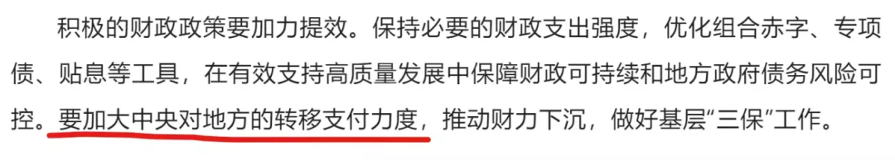
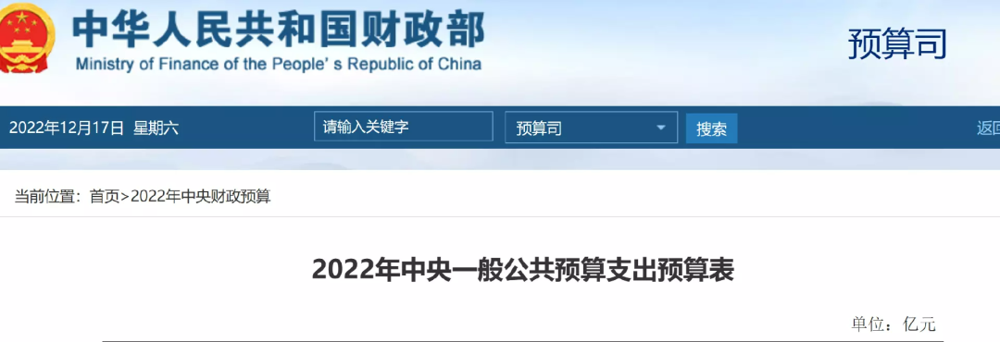

中央经济会议3点重要说明
V姐万事屋 V姐来了[V姐来了](http://weixin.qq.com/r/SDmHg1bExZ65KRLgb2zM)
| 微信号 | Vjielaile |
| 功能介绍 | 一起来把想要的生活收入囊中。 |
2022-12-17 20:57
原文链接(长) 原文链接(短)
Hi, 我是V姐。
昨晚中央经济会议公报发布，内容很丰富，包括了明年的发展方针，货币和财政政策，房地产，互联网平台，民营企业，外资等等。
中央经济会议的性质呢，是对10天之前政治局会议的细化。
这两个12月的会议，对来年的经济目标和主要宏观政策会给出明确的预示。因此经济会议的总体方向和政治局会议是一致的。
明年经济主线： **稳增长，扩内需。**
宏观政策： **货币稳健，财政宽松。**
这一块我就不重复分享了，上次政治局会议的文章已经讲过，没看过的朋友戳这里： [利好落地](http://mp.weixin.qq.com/s?__biz=MzI1NjQ2ODIzMg==&mid=2247486672&idx=1&sn=c92796929a04ebf46a8f88839aeec41e&chksm=ea2778b7dd50f1a178e45c77ccb29835d119774ad22f6d541e2db325f70080f2cea6b94c10c5&scene=21#wechat_redirect)
关于财政，经济会议补充了一个点：
**中央要加大对地方的转移支付力度。**

各地已经都差不多穷了，原来富裕的江浙沪和广东现在也没有余粮，只能靠中央财政的补贴。
中央财政原来最大的支出是国防支出，大约占到40%。现在还不知道明年对地方的转移力度有多大，对于军工是否会削减，需要明年3月等财政部预算出来才能知道。

**这个预算会影响到市场对于军工板块的预判**，所以买军工的小伙伴可以关注下。
跟政治局会议相比，这次经济会议补充的点很多，我个人认为值得关注的主要有以下3个：
**1、房地产的措辞出现重大变化**
政治局会议没有提地产，让市场出现很多猜想。
这次的公报里，依然有【坚持房子是用来住的，不是用来炒的】。
- 今年12月原文：
_【_ _要确保房地产市场平稳发展_ _，扎实做好保交楼、保民生、保稳定各项工作，满足行业合理融资需求，推动行业重组并购，有效防范化解优质头部房企风险，改善资产负债状况，同时要坚决依法打击违法犯罪行为。_ _要因城施策，支持刚性和改善性住房需求_ _，解决好新市民、青年人等住房问题，探索长租房市场建设。_ **_要坚持房子是用来住的、不是用来炒的定位_** _，推动房地产业向新发展模式平稳过渡。】_
- 去年12月的原文：
_【_ _要坚持房子是用来住的、不是用来炒的定位，_ _加强预期引导，探索新的发展模式，_ _坚持租购并举，加快发展长租房市场，推进保障性住房建设_ _，支持商品房市场更好满足购房者的合理住房需求，因城施策促进房地产业良性循环和健康发展。】_
大家仔细看一下，这两段文字虽然都有房住不炒，但是 **它的优先级出现了重大变化。**
去年是上来就作为总方针提出，房住不炒是第一要务，地产的任务是坚持探索新模式，比如租售并举、推进长租房和保障房。
**今年第一要务是保交楼，保稳定，防范风险。**
接下来的任务是 **支持刚性和改善性住房需求。**
房住不炒被放在了最后，而且强调要向新模式平稳过渡。
我理解房住不炒依然是我们的长期方针，重要性很高。
但是呢，保经济稳定，没有系统性风险，它的紧急性很高。
所以短期的最高优先级就变成了紧急性优先，等到经济缓过来，重要的事情还是要做的。
另外公报里对于扩内需提了3个主要产业，分别是住房改善、新能源汽车、养老服务。
原文如下：
_【要把恢复和扩大消费摆在优先位置。增强消费能力，改善消费条件，创新消费场景。多渠道增加城乡居民收入，_ **_支持住房改善、新能源汽车、养老服务等消费_** _。】_
可以看到，明年扩大内需的第一大抓手就是房地产。
新能源汽车很好，但是体量不够，按照乐观预期，明年的市场规模勉强能破万亿；
21年地产的新房销售规模在18万亿。
大家可以看到这个体量上的差距。
因此明年的地产是第一内需，一线城市的门槛一定也会有松动。
要买房的朋友可以看起来。
**2、坚定不移支持民营企业**
这次公报上有一句说明很有意思，专门针对社会上的一些说法给出回应：
_【_ _针对社会上对我们是否坚持“两个毫不动摇”的不正确议论，必须亮明态度，毫不含糊_ _。……_ **_要从制度和法律上把对国企民企平等对待的要求落下来，从政策和舆论上鼓励支持民营经济和民营企业发展壮大。依法保护民营企业产权和企业家权益。_** _各级领导干部要为民营企业解难题、办实事，构建亲清政商关系。】_
两个毫不动摇就是：毫不动摇巩固和发展公有制经济 **，毫不动摇鼓励、支持、引导非公有制经济发展。**
过去的公报，不太会在措辞上针对社会议论发声反驳，可见这次为了扭转预期，已经不再含蓄了，有话直说。
之前因为“新型举国体制”，“中国特色估值体系”，还有重启供销社等等政策，让部分人担心我们会全面拥抱国有经济，抛弃民营经济，这次会议给出正面回应，批驳了这种讲法。
**3、支持平台企业**
21年遭受重创的互联网平台，22年经历了大幅收缩业务线，降本增效，如今总算迎来了明确的政策预期转向。
公报里原文要求支持平台企业大显身手。
_【要大力发展数字经济，提升常态化监管水平，_ **_支持平台企业在引领发展、创造就业、国际竞争中大显身手。_** _抓住全球产业结构和布局调整过程中孕育的新机遇，勇于开辟新领域、制胜新赛道。】_
这个对于互联网大平台来说，无疑是好消息。
300的腾讯不贵，中概互联现在已经是妥妥的右侧了。
* * *
最近疫情四处开花，多地的医疗已经不堪重负，小伙伴们保护好自己，尽量不要扎堆阳，能不阳就不阳，既是保护自己家人，也是给医护人员减负。
没有抢到退烧药的朋友也不要太担心，朋友圈问一问，小区群找一找，民间备药还是有的，只是不均衡。大家如果需要药，跟亲朋好友求助，别说要一盒，这样人家压力确实大，你就说要2颗，很多人还是愿意伸出援手的。
我们的工业生产能力很强，预计再过1-2周，缺药现象就可以大大缓解。
希望朋友们都能安然度过这一波，我们一起期待明年的春暖花开。